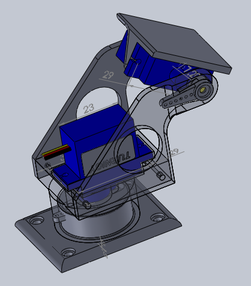

Projektista
Projekti hyödyntää Raspberry Pi:tä aurinkopaneelin automaattiseen ohjaamiseen. Valotunnistimet mittaavat valon määrää eri suunnista ja järjestelmä liikuttaa paneelia kohti voimakkainta valoa.

Käytetyt komponentit
- Raspberry Pi
- 2 servomoottoria
- 4 valotunnistinta
- Aurinkopaneeli
Lisätietoa Raspberry Pi:stä löytyy täältä:
Raspberry Pi Official Website